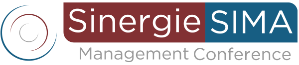

Sinergie 2026: Presenting on AI Literacy and Receiving the Outstanding Young Scholar Reviewer Award
Notes from my first Sinergie-SIMA conference in Pavia, where I presented work in progress on AI literacy in project management recruitment and received the Outstanding Young Scholar Reviewer award.

On 28–29 May 2026, I attended Sinergie for the first time, the annual conference organised by SIMA – Società Italiana di Management.
In the Artificial Intelligence in Management track, I presented a work-in-progress paper titled 'AI Literacy as a Hiring Signal in Project Management Recruitment'. The study examines online job postings to see how employers signal demand for AI skills when recruiting project managers.
Outstanding Young Scholar Reviewer
As the conference closed and I was already on the way home, I learnt that I had been named Outstanding Young Scholar Reviewer. The award recognises early-career researchers for thorough, punctual peer review, and getting that kind of recognition for refereeing work is genuinely gratifying.
Acknowledgements
My thanks to the University of Pavia for hosting the conference, to Prof. Cinzia Dessì, and to the colleagues I spoke with over those two days.
Next year's edition will be in Cagliari, in 2027.